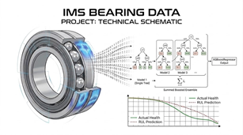

Bearing Monitoring System

Este projeto tem como objetivo realizar o monitoramento de falhas em rolamentos com apoio de técnicas de Machine Learning e análise de sinais.
Conteúdo
Nesta documentação você encontrará:
- Referência do Código: descrição das classes, funções e módulos principais do projeto.
- Extração de Características: explicação sobre as features calculadas a partir dos sinais.
Dados
Dataset
- Devido ao tamanho do arquivo original, o dataset não foi incluído neste repositório GitHub. O download deve ser realizado diretamente no Kaggle.
🌐 Pesquisar o artigo/dataset do Kaggle DataSet
📄 Abrir documentação do Kaggle em PDF
1. Resumo Executivo
Este projeto foi desenvolvido como um fluxo de manutenção preditiva e monitoramento de condição para rolamentos. O principal objetivo foi transformar sinais brutos de vibração em indicadores interpretáveis de saúde do equipamento, permitindo identificar padrões de degradação e apoiar análises de Remaining Useful Life (RUL).
O projeto conecta processamento de sinais, análise de séries temporais, engenharia de features, construção de um Health Index, lógica de alertas e raciocínio voltado à manutenção preditiva.
Em vez de apenas armazenar medições históricas, o projeto busca responder a uma pergunta operacional mais relevante:
O equipamento ainda está operando normalmente ou está caminhando para uma condição crítica de degradação?
2. Narrativa STAR
Situação
Na manutenção industrial, falhas raramente acontecem sem sinais prévios. Rolamentos podem apresentar degradação progressiva por meio do comportamento da vibração antes de chegar ao colapso ou a uma falha severa.
Uma abordagem puramente descritiva de monitoramento consegue mostrar o que aconteceu no passado, mas não apoia totalmente uma ação preventiva. Para manutenção preditiva, o principal desafio é converter o histórico bruto dos sensores em indicadores que ajudem a estimar se o ativo está saudável, degradado ou se aproximando de uma condição crítica.
Neste projeto, o problema foi tratado como um fluxo de condition monitoring e análise orientada a RUL, utilizando dados de vibração de rolamentos.
Tarefa
A tarefa foi construir um pipeline capaz de:
- ler e organizar dados temporais de vibração de rolamentos;
- extrair features estatísticas e de domínio de frequência a partir dos sinais brutos;
- representar cada observação com contexto temporal;
- criar um Health Index para resumir a condição do equipamento;
- suavizar o sinal de saúde para reduzir ruído e evitar alertas instáveis;
- definir zonas de alerta e zonas críticas;
- identificar o comportamento de degradação ao longo do tempo;
- apoiar o raciocínio de Remaining Useful Life;
- documentar o fluxo de forma compreensível para públicos técnicos e de negócio.
O objetivo não foi apenas criar um modelo, mas construir uma lógica de monitoramento que pudesse ser explicada e defendida tecnicamente.
Ação
1. Organização dos dados como um problema de monitoramento temporal
Os dados foram tratados como uma sequência temporal, e não como registros independentes.
Cada observação foi associada a conceitos como:
run_idtime_index- histórico da condição do equipamento
- comportamento de degradação progressiva
- estado de alerta
Essa decisão foi importante porque a degradação de um rolamento não é apenas um evento pontual. Ela é um processo que evolui ao longo do tempo.
2. Extração de features de vibração a partir dos sinais brutos
O projeto criou features que resumem o comportamento do sinal de vibração. Essas features ajudam a converter medições brutas dos sensores em variáveis estruturadas que podem ser usadas para monitoramento e modelagem.
Exemplos de features utilizadas ou representadas no projeto incluem:
- RMS
- desvio padrão
- variância
- curtose
- shape factor
- indicadores baseados em FFT
- estatísticas derivadas do sinal
Essas features são relevantes porque podem capturar mudanças na intensidade do sinal, instabilidade, dispersão, picos e comportamentos anormais de vibração.
3. Construção de um Health Index
Uma ideia central do projeto é a construção de um Health Index.
O Health Index resume a condição atual do equipamento em um sinal interpretável de degradação. Quando o índice permanece em uma zona saudável, o rolamento aparenta operar dentro do comportamento esperado. Quando o índice começa a cair e entra em zonas de atenção ou crítica, o risco de falha aumenta.
Essa etapa transforma o projeto de uma simples análise histórica em um fluxo de monitoramento que apoia a tomada de decisão.
4. Aplicação de suavização para reduzir ruído
Dados de sensores podem ser ruidosos. Uma única medição instável não deve automaticamente disparar um alerta severo.
Para tornar a lógica de monitoramento mais robusta, o projeto aplica suavização ao Health Index. Isso ajuda a reduzir falsos alarmes e torna a tendência de degradação mais fácil de interpretar.
Essa é uma decisão importante de engenharia, porque sistemas de manutenção preditiva precisam equilibrar sensibilidade com confiabilidade operacional.
5. Definição de zonas e estados de alerta
O projeto utiliza uma lógica de alertas baseada na degradação da saúde do equipamento. O Health Index pode ser interpretado por meio de zonas como:
- zona saudável;
- zona de atenção;
- zona crítica.
Isso permite comunicar o risco de forma prática, em vez de mostrar apenas a saída numérica de um modelo.
Do ponto de vista de negócio, isso é importante porque decisões de manutenção normalmente são tomadas com base em níveis de risco, e não apenas em previsões numéricas.
6. Apoio ao raciocínio de Remaining Useful Life
Quando o equipamento entra em uma região crítica de degradação, o projeto pode apoiar uma interpretação orientada a RUL: estimar quanto tempo pode restar até o ponto observado de colapso ou falha.
Em um exemplo documentado, o modelo estimou aproximadamente 610 minutos até o colapso observado. Esse valor não deve ser interpretado como uma certeza absoluta, mas como uma aproximação baseada no comportamento histórico de degradação do ativo.
Isso torna o projeto mais valioso porque ele deixa de responder apenas “o que aconteceu?” e passa a apoiar a pergunta “o que pode acontecer a seguir?”.
7. Enquadramento da solução como um fluxo de monitoramento orientado à produção
O projeto foi desenhado com conceitos úteis além de uma experimentação em notebook:
- simulação de chegada contínua de dados;
- armazenamento do histórico de sinais;
- acionamento de alertas;
- redução de falsos alarmes;
- código Python modular;
- saídas orientadas a monitoramento;
- documentação para MkDocs;
- possibilidade futura de integração com API ou dashboard.
Resultado
O projeto produziu um fluxo defensável de manutenção preditiva que transforma dados brutos de vibração de rolamentos em indicadores interpretáveis de saúde e risco.
Os principais resultados foram:
- sinais brutos de vibração foram convertidos em features estatísticas e baseadas em sinais;
- o comportamento de degradação foi representado por meio de um Health Index;
- zonas de saúde ajudaram a comunicar a condição do equipamento com mais clareza;
- a suavização reduziu o risco de alertas ruidosos e instáveis;
- o fluxo apoiou o raciocínio de RUL e estimou o tempo restante antes do colapso em um caso de teste documentado;
- o projeto demonstrou como machine learning e engenharia de features podem apoiar decisões de manutenção antes que a falha aconteça.
O resultado mais importante não é apenas uma previsão numérica. O principal valor está na lógica de monitoramento: o projeto ajuda a explicar como a condição do equipamento muda ao longo do tempo e como essa mudança pode ser traduzida em risco de manutenção.
3. Interpretação de Negócio
Este projeto pode ser explicado como um sistema de apoio à manutenção preditiva.
As perguntas práticas de negócio são:
- O equipamento está se comportando normalmente?
- O Health Index está se movendo em direção a uma zona de atenção ou crítica?
- A degradação é apenas ruído temporário ou um padrão persistente?
- Quanto tempo pode restar antes de uma possível falha?
- A manutenção deve ser priorizada antes que o equipamento entre em colapso?
Isso é especialmente relevante porque decisões de manutenção geralmente envolvem custo, tempo de parada, risco operacional e planejamento.
O projeto não afirma substituir o julgamento de especialistas de manutenção. Ele fornece um sinal baseado em dados que pode ajudar a priorizar investigação e ação.
4. Competências Técnicas Demonstradas
Este projeto demonstra conhecimento prático em:
- Python
- pandas
- NumPy
- scikit-learn
- análise de séries temporais
- processamento de sinais de vibração
- manutenção preditiva
- monitoramento de condição
- análise de Remaining Useful Life
- engenharia de features
- features estatísticas de sinais
- extração de features baseada em FFT
- construção de Health Index
- técnicas de suavização
- ajuste de limiares
- lógica de alertas
- raciocínio de detecção de anomalias
- desenho de fluxo de monitoramento
- documentação modular de projeto
6. Resumo STAR Final
| Elemento STAR | Resumo |
|---|---|
| Situação | Falhas em rolamentos podem apresentar degradação progressiva por vibração antes do colapso, mas dados históricos brutos não apoiam diretamente decisões preventivas. |
| Tarefa | Construir um pipeline de monitoramento que extraia features de vibração, crie um Health Index, identifique zonas de degradação e apoie análise orientada a RUL. |
| Ação | Organizei os dados como uma série temporal, extraí features estatísticas e baseadas em FFT, criei um Health Index suavizado, defini zonas de alerta e documentei a lógica de monitoramento. |
| Resultado | Criei um fluxo defensável de manutenção preditiva que traduz dados brutos de vibração em indicadores de saúde, estados de alerta e insights orientados à manutenção e RUL. |